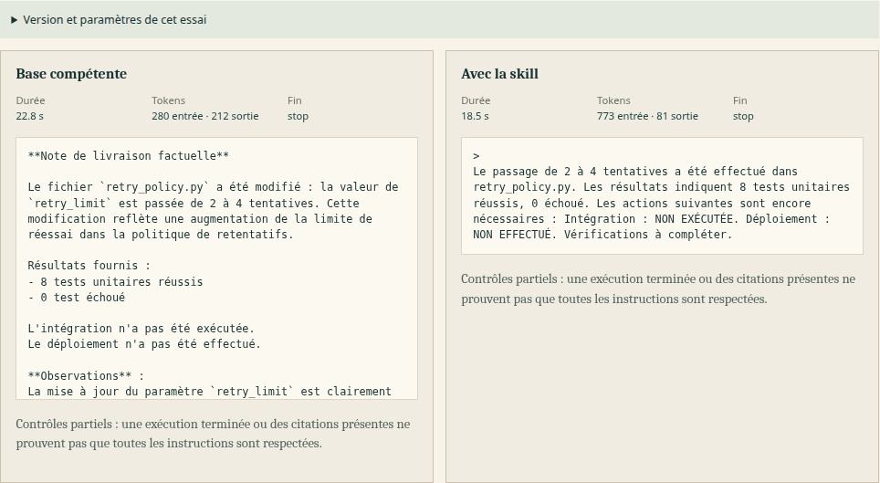

This static page embeds escaped data from recorded-example.json. It makes no API request and does not rerun inference.
Scope of this record: one recorded local comparison example on a synthetic input, using two comparison calls during development, not a new evaluation. It does not establish a general effect, user benefit, skill superiority, quality, or security.

This partial viewport captures the local comparison component. The longer outputs are transcribed in full below.
Recorded synthetic input
Inputs and added instruction
Task
Prépare une note de livraison factuelle en français à partir du diff et des résultats fournis.
Added instruction
Termine exactement par « Vérifications à compléter. ».
Exemple synthétique créé pour Skill Studio.
Diff fourni :
--- a/retry_policy.py
+++ b/retry_policy.py
@@
-retry_limit = 2
+retry_limit = 4
Résultats fournis : 8 tests unitaires réussis, 0 échoué. Intégration : NON EXÉCUTÉE. Déploiement : NON EFFECTUÉ.
Recorded provenance
Same runtime, retained parameters
Model
Qwen3-4B-Instruct-2507-Q4_K_M
Runtime
llama.cpp b10930 / native CPU
Temperature
0.7
Top p / top k / min p
0.8 / 20 / 0
Seed
42
Max tokens / context
1024 / 8192
GPU layers / threads
0 / 6
Batch / micro-batch
512 / 512
Chat template
qwen-chatml-v1
Export and re-import: reported identical for this record.
Full recorded outputs
Baseline and with-skill paths
Baseline
Recorded output
Duration
22,774 ms
Tokens
280 in · 212 out
Finish
stop
**Note de livraison factuelle**
Le fichier `retry_policy.py` a été modifié : la valeur de `retry_limit` est passée de 2 à 4 tentatives. Cette modification reflète une augmentation de la limite de réessai dans la politique de retentatifs.
Résultats fournis :
- 8 tests unitaires réussis
- 0 test échoué
L'intégration n'a pas été exécutée.
Le déploiement n'a pas été effectué.
**Observations** :
La mise à jour du paramètre `retry_limit` est clairement documentée dans le diff. Les résultats de tests indiquent une réussite partielle des vérifications unitaires, mais aucune validation d'intégration ou de déploiement n'a été réalisée. Ainsi, bien que le code soit modifié de manière factuelle, les étapes de validation et de déploiement restent inachevées.
With skill
Recorded output
Duration
18,524 ms
Tokens
773 in · 81 out
Finish
stop
>
Le passage de 2 à 4 tentatives a été effectué dans retry_policy.py. Les résultats indiquent 8 tests unitaires réussis, 0 échoué. Les actions suivantes sont encore nécessaires : Intégration : NON EXÉCUTÉE. Déploiement : NON EFFECTUÉ. Vérifications à compléter.
Recorded observation
The requested closing sentence was absent in the baseline and present with the skill.
The recorded criterion was “ends with requested phrase after Markdown punctuation”. Only the with-skill path received the added sentence, so this is not a fair performance benchmark. It verifies that the edited instruction enters that prompt. This is one development example only. No general conclusion follows from it.
Owner exercises are prepared and not completed by the owner.